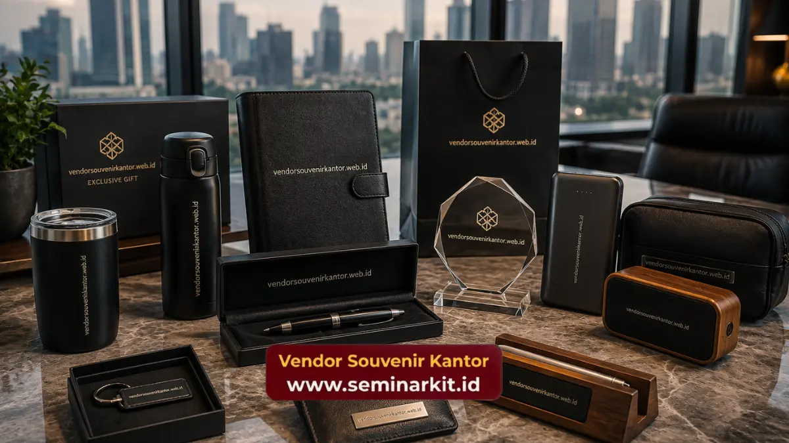

Ide souvenir kantor budget 50 ribu yang paling banyak diminati perusahaan meliputi mug custom logo, notebook eksekutif, tumbler, gantungan kunci premium, dan power bank mini.
Produk-produk ini dipilih karena menawarkan fungsi harian yang nyata bagi penerimanya, bukan sekadar pajangan yang cepat terlupakan.
Bagi perusahaan yang ingin tetap tampil profesional dengan anggaran terukur, kombinasi produk fungsional dan desain logo yang rapi menjadi kunci utama.
- Produk fungsional seperti mug, tumbler, dan notebook lebih efektif sebagai media branding jangka panjang.
- Aksesori elektronik ringan seperti power bank mini semakin diminati karena relevan dengan kebutuhan kerja digital.
- Pemilihan warna dan desain logo sebaiknya konsisten dengan identitas visual perusahaan.
- Tema acara dapat memengaruhi jenis souvenir yang paling sesuai untuk dipilih.
Mengapa Produk Fungsional Menjadi Ide Souvenir Kantor Terbaik?
Produk fungsional menjadi ide souvenir kantor terbaik karena tetap digunakan penerimanya dalam aktivitas sehari-hari, sehingga logo perusahaan terus terlihat dalam jangka waktu yang lebih lama dibandingkan souvenir yang hanya dipajang sesaat.
Ketika sebuah souvenir memiliki nilai guna yang jelas, kemungkinan besar produk tersebut akan disimpan dan digunakan berulang kali oleh karyawan maupun klien.
Hal ini secara tidak langsung memperpanjang durasi eksposur logo perusahaan tanpa perlu biaya tambahan untuk promosi lanjutan.
Selain itu, produk fungsional juga cenderung meninggalkan kesan positif terhadap perusahaan pemberi souvenir, karena penerima merasa mendapatkan sesuatu yang benar-benar bermanfaat, bukan sekadar formalitas acara.
Apa Saja Ide Souvenir Kantor Budget 50 Ribu yang Paling Diminati?
Ide souvenir kantor budget 50 ribu yang paling diminati saat ini meliputi mug custom logo, tumbler sederhana, notebook eksekutif, gantungan kunci premium, dan power bank mini kapasitas standar.
Mug dan Tumbler Custom Logo
Mug dan tumbler tetap menjadi ide souvenir kantor yang paling konsisten diminati dari tahun ke tahun.
Selain harganya yang relatif terjangkau, area cetak pada permukaan mug maupun tumbler cukup luas untuk menampilkan logo perusahaan secara jelas dan proporsional.
Notebook Eksekutif dengan Cover Custom
Notebook dengan cover custom logo cocok digunakan sebagai souvenir untuk acara seminar, training, maupun rapat kerja tahunan.
Desain cover yang rapi turut memperkuat kesan profesional perusahaan di mata peserta acara.
Gantungan Kunci dan Aksesori Kecil Premium
Gantungan kunci dengan bahan metal atau akrilik premium menjadi ide souvenir yang praktis untuk acara dengan jumlah peserta besar.
Ukurannya yang ringkas membuat produk ini mudah didistribusikan tanpa mengurangi kesan eksklusif souvenir.
Power Bank Mini dan Aksesori Elektronik Ringan
Power bank mini menjadi ide souvenir yang semakin relevan seiring meningkatnya kebutuhan perangkat elektronik dalam aktivitas kerja harian.
Produk ini memberikan nilai fungsional tinggi sekaligus tetap dapat dicustom logo pada bagian bodinya.
Bagaimana Cara Menyesuaikan Ide Souvenir dengan Tema Acara Kantor?
Ide souvenir kantor sebaiknya disesuaikan dengan tema dan tujuan acara, misalnya produk yang mendukung produktivitas kerja untuk acara training, atau produk yang lebih santai untuk acara gathering karyawan.
Untuk acara formal seperti seminar atau rapat kerja tahunan, souvenir yang bersifat profesional seperti notebook dan alat tulis custom lebih sesuai digunakan.
Sementara itu, untuk acara gathering atau family day, souvenir dengan desain yang lebih santai seperti tumbler warna-warni atau gantungan kunci unik dapat menjadi pilihan yang lebih relevan.
Penyesuaian ini penting dilakukan agar souvenir tidak terkesan asal pilih, melainkan mencerminkan perhatian perusahaan terhadap detail dan pengalaman peserta acara.

Berapa Jumlah Ideal Pemesanan untuk Ide Souvenir Kantor Budget 50 Ribu?
Jumlah ideal pemesanan souvenir kantor budget 50 ribu umumnya disesuaikan dengan skala acara, mulai dari acara internal berskala kecil hingga acara korporat dengan jumlah peserta yang lebih besar.
Untuk acara internal seperti rapat divisi atau apresiasi tim kecil, jumlah pemesanan biasanya lebih fleksibel dan dapat difokuskan pada kualitas serta variasi produk.
Sementara itu, untuk acara berskala besar seperti seminar nasional atau gathering seluruh karyawan, jumlah pemesanan perlu diperhitungkan secara lebih cermat agar seluruh peserta mendapatkan souvenir dengan kualitas yang konsisten.
Selain jumlah peserta, penting juga mempertimbangkan kemungkinan penambahan peserta di menit-menit akhir, sehingga menyiapkan cadangan produk dalam jumlah wajar dapat membantu kelancaran distribusi souvenir pada hari pelaksanaan acara.
Bagaimana Ide Souvenir Kantor Dapat Mendukung Citra Profesional Perusahaan?
Ide souvenir kantor yang dipilih secara tepat dapat mendukung citra profesional perusahaan dengan menghadirkan kesan detail dan perhatian terhadap kualitas, bukan sekadar formalitas pembagian merchandise.
Souvenir yang tampil rapi, fungsional, dan konsisten dengan identitas visual perusahaan cenderung meninggalkan kesan yang lebih positif dibandingkan souvenir yang dipilih secara asal-asalan tanpa mempertimbangkan kualitas maupun relevansi produk.
Kesan ini secara tidak langsung turut memengaruhi persepsi klien, mitra bisnis, maupun karyawan terhadap standar kerja perusahaan secara keseluruhan.
Oleh karena itu, pemilihan ide souvenir sebaiknya tidak hanya mempertimbangkan sisi anggaran, tetapi juga bagaimana produk tersebut dapat merepresentasikan nilai dan profesionalisme perusahaan kepada setiap pihak yang menerimanya.
Kesimpulan
Souvenir kantor dengan anggaran 50 ribu sebaiknya mempertimbangkan nilai fungsional produk, kesesuaian dengan tema acara, serta konsistensi desain logo perusahaan.
Mug, notebook, gantungan kunci, dan power bank mini menjadi beberapa pilihan yang konsisten diminati karena menawarkan keseimbangan antara harga dan manfaat.
Untuk mendapatkan ide souvenir kantor budget 50 ribu yang sesuai kebutuhan acara perusahaan Anda, kunjungi vendorsouvenirkantor.web.id dan konsultasikan langsung jenis produk yang paling sesuai dengan tema dan anggaran acara Anda.

Banner promosi: klik gambar untuk langsung terhubung ke WhatsApp tim sales.